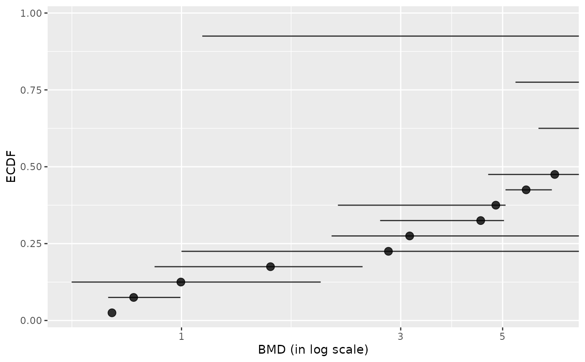
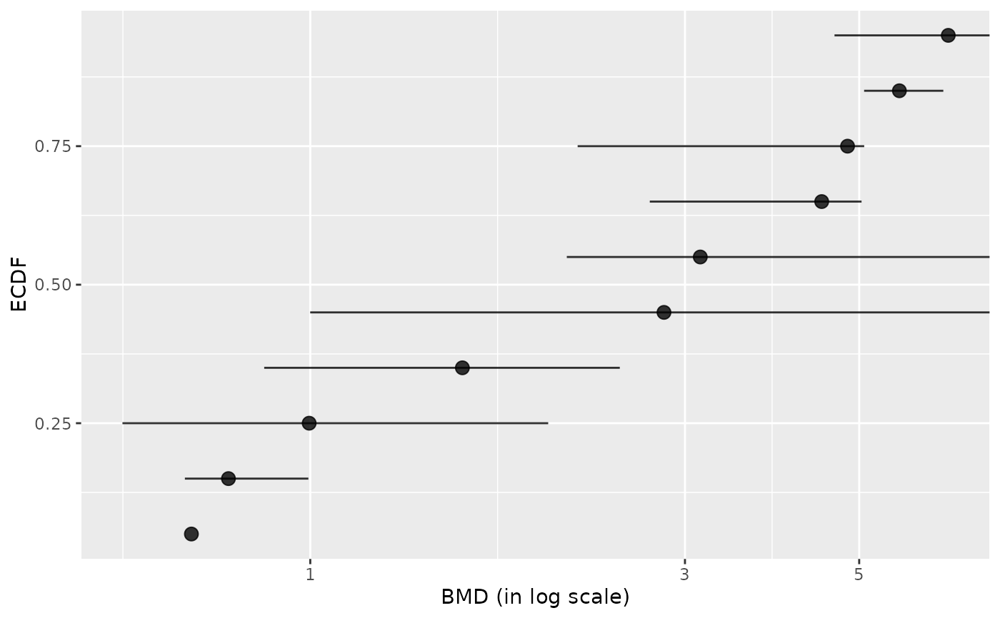
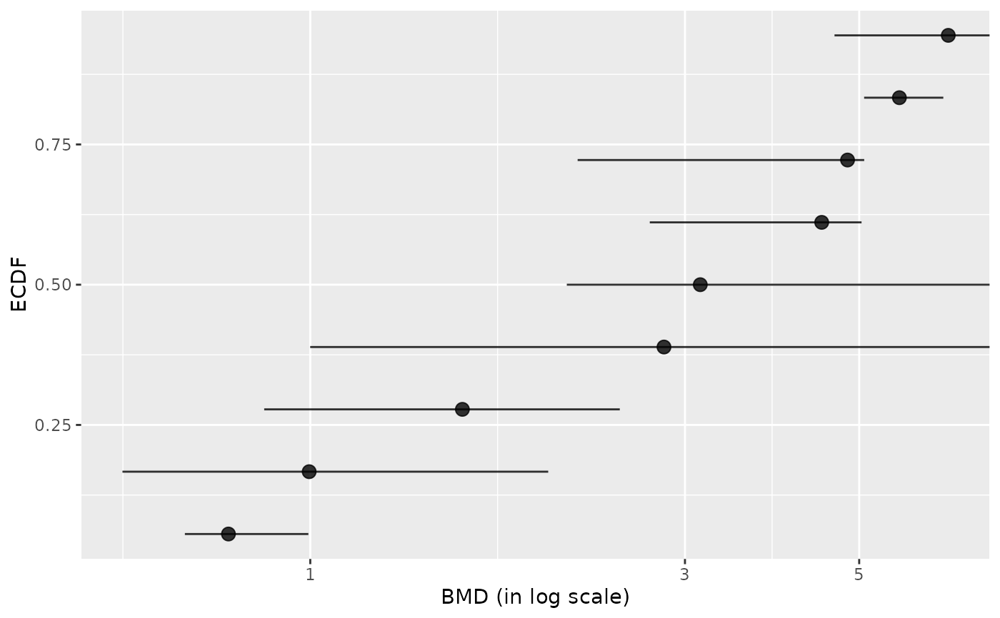
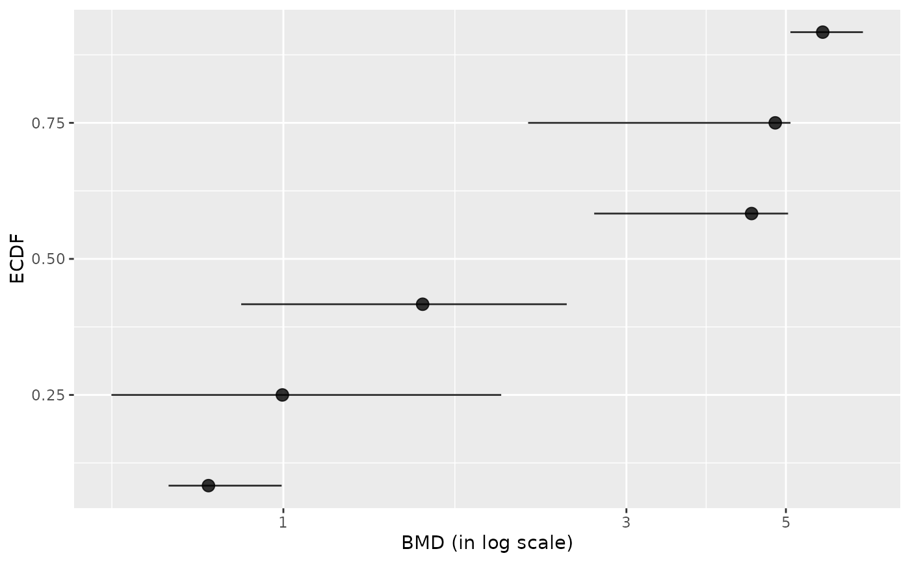
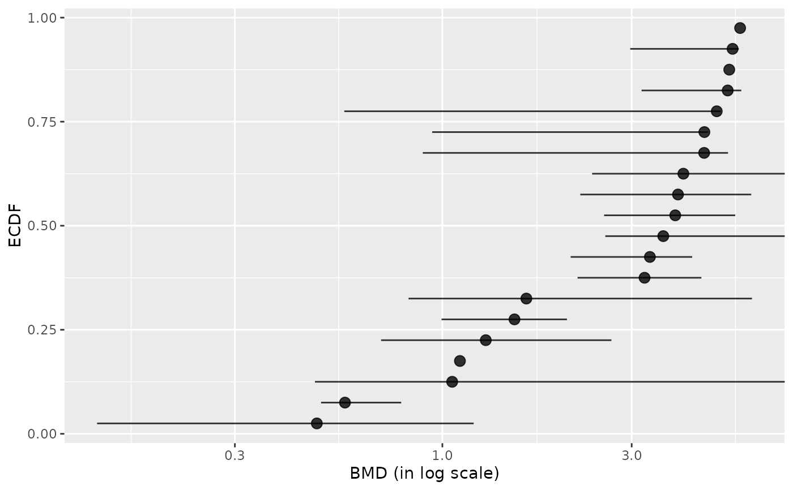
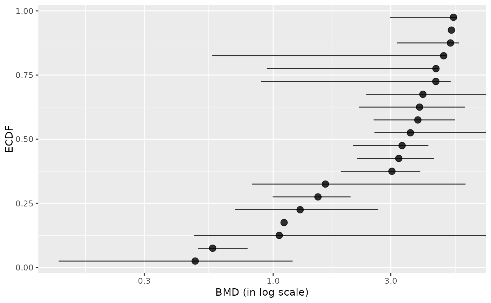
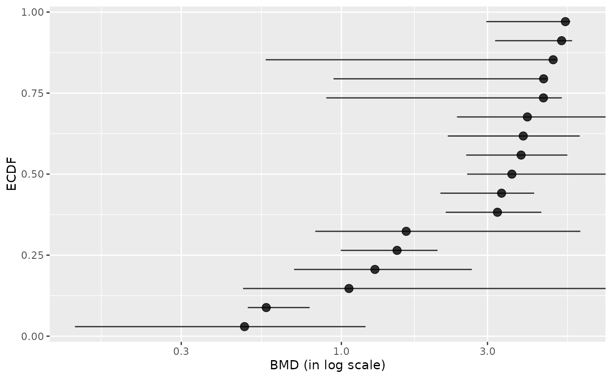
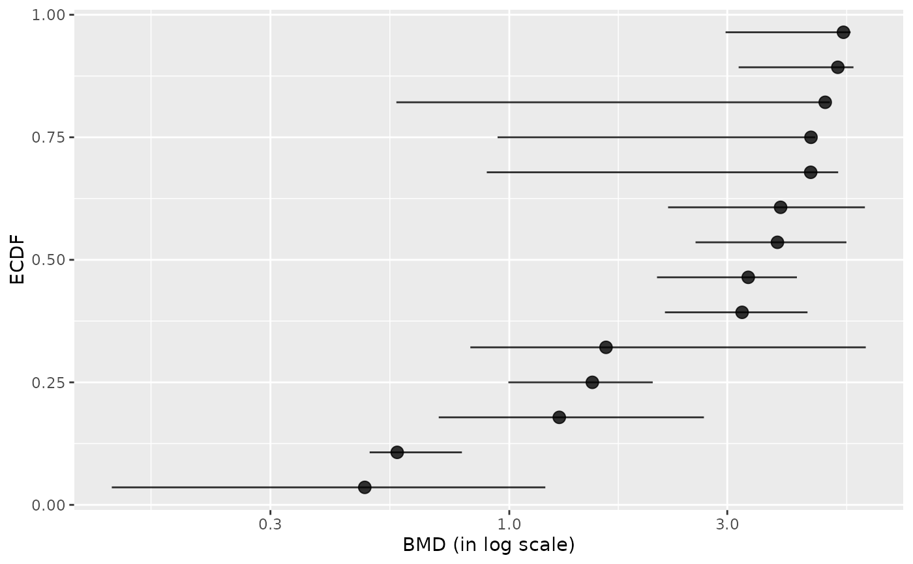

Filtering BMDs according to estimation quality
bmdfilter.RdFiltering BMDs in DRomics workflow output according to estimation quality, to retain the best estimated BMDs for subsequent biological annotation and interpretation.
Arguments
- res
The dataframe of results provided by
bmdbootorbmdcalc(res) or a subset of this data frame.Even if this function is intended to be used just after the calculation of BMD values, before the biological annotation, it can also be used within the interpretation workflow, on an extended dataframe with additional columns coming for example from the biological annotation of items, and with some lines replicated for items with more than one annotation.
In any case the dataframe must at least contain the column giving the BMD values (
BMD.zSDorBMD.xfolddepending on the chosen BMDtype), identification of each curve (id), and ifBMDfilteris set to"CIdefined"or"CIfinite", the columnsBMD.zSD.lower,BMD.zSD.upperorBMD.xfold.lower,BMD.xfold.upperdepending on the argumentBMDtype.- BMDfilter
If not
"none", the type of filter applied, based on BMD estimation. If"definedCI"(default choice), all items for which point and interval estimates of the BMD were successfully calculated are retained (so items for which the bootstrap procedure failed are excluded). If"finiteCI", all items for which point and interval estimates of the BMD were successfully calculated and gave values within the range of tested/observed doses are retained. If"definedBMD", all items for which the point estimate of the BMD was estimated at a value within the range of tested/observed doses are retained.- BMDtype
The type of BMD used for the previously described filtering procedure,
"zSD"(default choice) or"xfold".
Details
Using the argument BMDfilter three filters are proposed to retain
only the items associated to the best estimated BMD values.
By default we recommend to retain only the items for which the BMD and its
confidence interval are defined (using "CIdefined")
(so excluding items for which the bootstrap procedure failed).
One can be even more restrictive by
retaining items only if the BMD confidence interval is within the range of
tested/observed doses (using "CIfinite"), or less restrictive
(using "BMDIdefined") requiring that the BMD
point estimate only must be defined within the range of tested/observed doses
(let us recall that in the bmdcalc output,
if it is not the case the BMD is coded NA).
We propose an option "none" only in case, in the future, we add
other filters not based on the BMD.
Value
A dataframe corresponding to a subset of res given in input, that can be used for biological annotation and further exploration.
See also
See selectgroups, bmdboot and
bmdcalc.
Examples
# (1) a toy example
# on a very small subsample of a microarray data set
# and a very smal number of bootstrap iterations
# (clearly not sufficient, but it is just for illustration)
#
datafilename <- system.file("extdata", "transcripto_very_small_sample.txt",
package = "DRomics")
# to test the package on a small but not very small data set
# use the following commented line
# datafilename <- system.file("extdata", "transcripto_sample.txt", package = "DRomics")
o <- microarraydata(datafilename, check = TRUE, norm.method = "cyclicloess")
#> Just wait, the normalization using cyclicloess may take a few minutes.
s_quad <- itemselect(o, select.method = "quadratic", FDR = 0.05)
#> Removing intercept from test coefficients
f <- drcfit(s_quad, progressbar = TRUE)
#> The fitting may be long if the number of selected items is high.
#>
|
| | 0%
|
|=== | 5%
|
|======= | 10%
|
|========== | 14%
|
|============= | 19%
|
|================= | 24%
|
|==================== | 29%
|
|======================= | 33%
|
|=========================== | 38%
|
|============================== | 43%
|
|================================= | 48%
|
|===================================== | 52%
|
|======================================== | 57%
|
|=========================================== | 62%
|
|=============================================== | 67%
|
|================================================== | 71%
|
|===================================================== | 76%
|
|========================================================= | 81%
|
|============================================================ | 86%
|
|=============================================================== | 90%
|
|=================================================================== | 95%
|
|======================================================================| 100%
r <- bmdcalc(f)
set.seed(1234) # to get reproducible results with a so small number of iterations
(b <- bmdboot(r, niter = 10)) # with a non reasonable value for niter
#> Warning:
#> A small number of iterations (less than 1000) may not be sufficient to
#> ensure a good quality of bootstrap confidence intervals.
#> The bootstrap may be long if the number of items and the number of
#> bootstrap iterations is high.
#>
|
| | 0%
|
|==== | 5%
|
|======= | 10%
|
|========== | 15%
|
|============== | 20%
|
|================== | 25%
|
|===================== | 30%
|
|======================== | 35%
|
|============================ | 40%
|
|=================================== | 50%
|
|====================================== | 55%
|
|========================================== | 60%
|
|============================================== | 65%
|
|==================================================== | 75%
|
|======================================================== | 80%
|
|============================================================ | 85%
|
|=============================================================== | 90%
|
|================================================================== | 95%
|
|======================================================================| 100%
#> Bootstrap confidence interval computation failed on 2 items among 20
#> due to lack of convergence of the model fit for a fraction of the
#> bootstrapped samples greater than 0.5.
#> For 3 BMD.zSD values and 12 BMD.xfold values among 20 at least one
#> bound of the 95 percent confidence interval could not be computed due
#> to some bootstrapped BMD values not reachable due to model asymptotes
#> or reached outside the range of tested doses (bounds coded Inf)).
# !!!! TO GET CORRECT RESULTS
# !!!! niter SHOULD BE FIXED FAR LARGER , e.g. to 1000
# !!!! but the run will be longer
### (1.a) Examples on BMD.xfold (with some undefined BMD.xfold values)
# Plot of BMDs with no filtering
subres <- bmdfilter(b$res, BMDfilter = "none")
bmdplot(subres, BMDtype = "xfold", point.size = 3, add.CI = TRUE)
#> Warning: Removed 10 rows containing missing values (`geom_point()`).
#> Warning: Removed 2 rows containing missing values (`geom_errorbarh()`).

# Plot of items with defined BMD point estimate
subres <- bmdfilter(b$res, BMDtype = "xfold", BMDfilter = "definedBMD")
bmdplot(subres, BMDtype = "xfold", point.size = 3, add.CI = TRUE)
#> Warning: Removed 1 rows containing missing values (`geom_errorbarh()`).

# Plot of items with defined BMD point estimate and CI bounds
subres <- bmdfilter(b$res, BMDtype = "xfold", BMDfilter = "definedCI")
bmdplot(subres, BMDtype = "xfold", point.size = 3, add.CI = TRUE)

# Plot of items with finite BMD point estimate and CI bounds
subres <- bmdfilter(b$res, BMDtype = "xfold", BMDfilter = "finiteCI")
bmdplot(subres, BMDtype = "xfold", point.size = 3, add.CI = TRUE)

# \donttest{
### (1.b) Examples on BMD.zSD (with no undefined BMD.zSD values)
# Plot of BMDs with no filtering
subres <- bmdfilter(b$res, BMDfilter = "none")
bmdplot(subres, BMDtype = "zSD", point.size = 3, add.CI = TRUE)
#> Warning: Removed 2 rows containing missing values (`geom_errorbarh()`).

# Plot items with defined BMD point estimate (the same on this ex.)
subres <- bmdfilter(b$res, BMDtype = "zSD", BMDfilter = "definedBMD")
bmdplot(subres, BMDtype = "zSD", point.size = 3, add.CI = TRUE)
#> Warning: Removed 2 rows containing missing values (`geom_errorbarh()`).

# Plot of items with defined BMD point estimate and CI bounds
subres <- bmdfilter(b$res, BMDtype = "zSD", BMDfilter = "definedCI")
bmdplot(subres, BMDtype = "zSD", point.size = 3, add.CI = TRUE)

# Plot of items with finite BMD point estimate and CI bounds
subres <- bmdfilter(b$res, BMDtype = "zSD", BMDfilter = "finiteCI")
bmdplot(subres, BMDtype = "zSD", point.size = 3, add.CI = TRUE)

# }